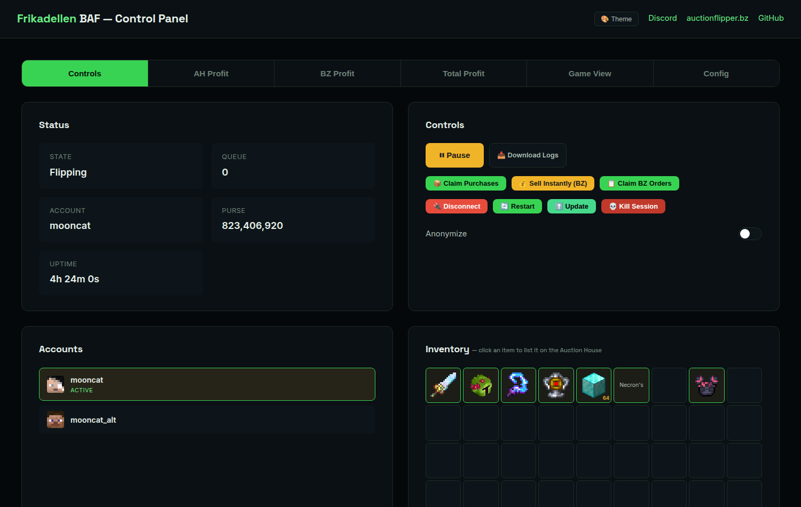

Frikadellen BAF
A Coflnet-powered Auction House & Bazaar flipper: ~50ms BIN buys, auto-relisting, bazaar orders, a web panel and Discord control. The flagship, and the reason this design is green.
Philipp "TreXito" Podobri
IT systems technician, now studying at 42 Wels. I build around Minecraft automation, live data, and the infrastructure that keeps a project up while I sleep.
A Coflnet-powered Auction House & Bazaar flipper: ~50ms BIN buys, auto-relisting, bazaar orders, a web panel and Discord control. The flagship, and the reason this design is green.
A flight tracker with a map, flight history and optional Discord alerts. It started with a simple question: what is flying overhead right now?
A pathfinding fork adapted for my Minecraft automation work. The kind of change that happens when an existing tool almost fits the job.
Buying is one part of it. Reconnecting, relisting, watching the current state and controlling a running session from anywhere make up the rest. The panel is real, so is the log: 117 flips · 1.77B tracked profit on the anonymized public feed.

Studying programming: C, Bash, and the discipline of the man pages.
IT system technician apprenticeship. Logs, networks, deployment, and the problems that only appear once something is already running.
IT Medientechnik.
Competing keeps me away from the desk. openpowerlifting.org